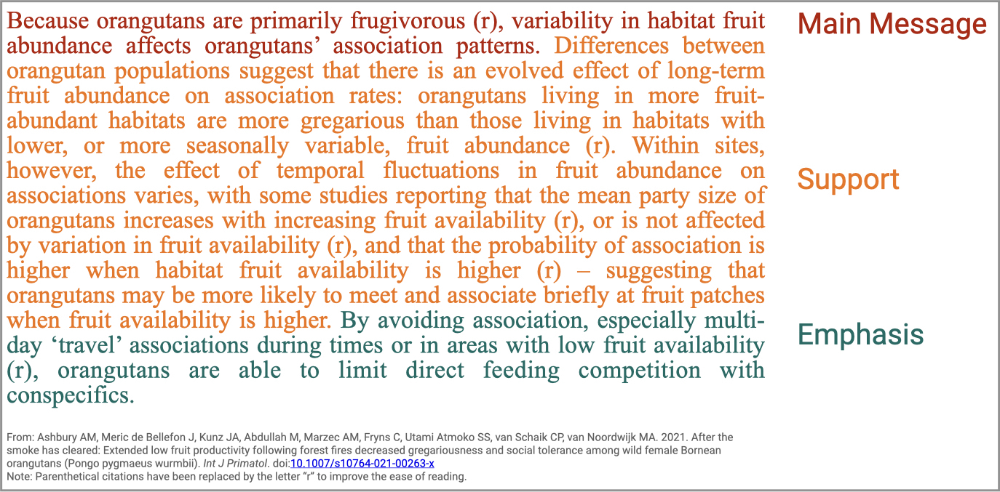
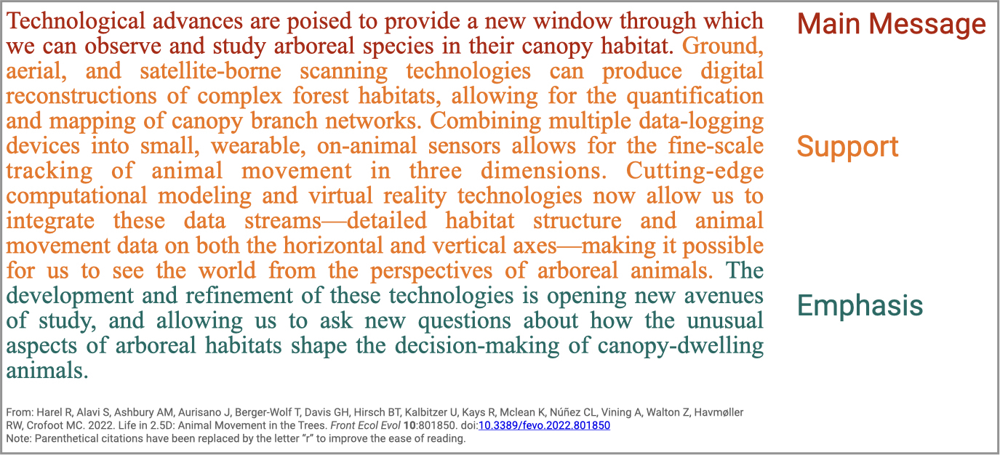
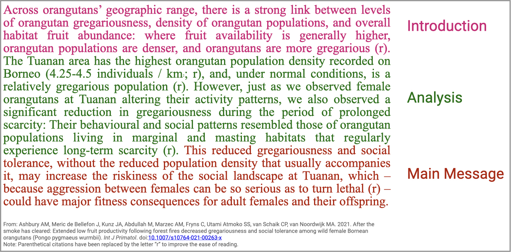
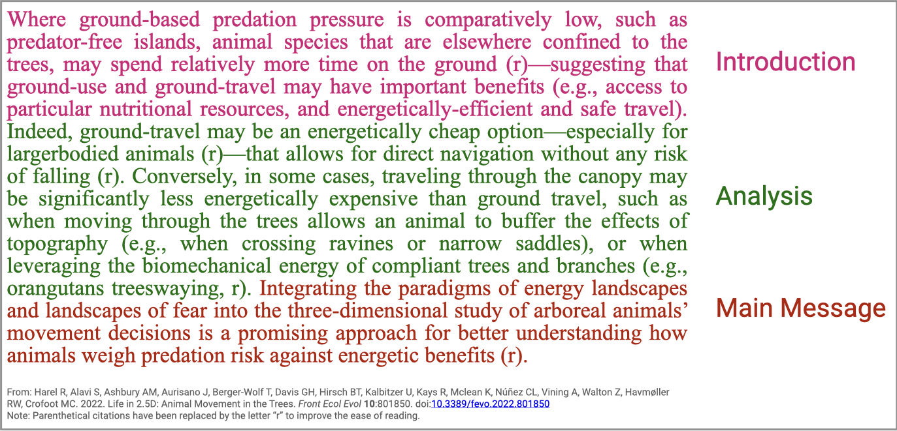
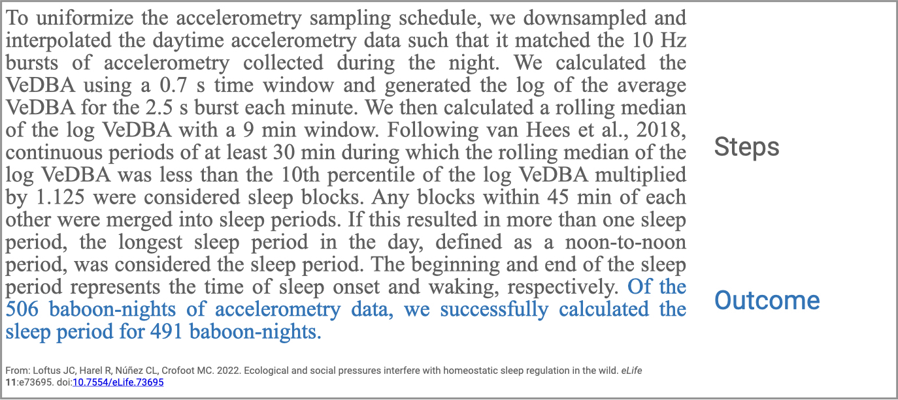

Paragraphs: The basic buidling blocks of text
It’s no secret how much I love good paragraphing. I think of paragraphs as the basic building blocks of a text, and there is nothing nicer to read than a text with well-delineated and well-constructed paragraphs. If an author hasn’t properly ‘chunked’ their writing, then the audience can’t properly ‘chunk’ their reading and interpretation. Reading a text with poor paragraphing is cumbersome and slow at best, at worst it can be confusing and impossible to really understand. As such, proper paragraphing is vital for effective scientific writing. The following is a brief overview of what makes for good paragraphs…
Before we get started…
A very basic, but vitally important, aspect of paragraphing is paragraph breaks - i.e. the indication that one paragraph is ending and another is beginning. This can be indicated in two ways: 1) A blank line can be inserted after the end of a paragraph, so there is extra blank space before the next paragraph begins (i.e. if your document is double spaced, then there would be the equivalent of three blank lines between paragraphs), or 2) The beginning of each new paragraph is indented (usually by 1 tab, which is equal to 5 to 10 spaces) from the left margin. It is not necessary, but also not incorrect, to do both of these things. It is, however, incorrect to do neither of these two things; you cannot simply hit “enter” and start a new paragraph, without indentation, on the next new line directly after the previous paragraph.
One paragraph = One point
Generally speaking, a paragraph should be about 3 to 6 sentences long, and should make one single point. If you find that making a point is requiring much more than 6 sentences, then you should consider breaking it down into >1 sub-points, and devoting a paragraph to each.
A good rule of thumb is: You and your readers should be able to summarize the topic of each paragraph in 5 words or less. I recommend actually doing this as an exercise with any text that you are writing or editing - go through the text and try to write the topic of each paragraph in the margin. Notice where you struggle to concisely articulate the point or topic of a paragraph - is this because the paragraph is too long? too unfocused? meandering from one topic to another? generally unclear?
It’s important to remember that what constitutes “one single point” will depend on the resolution of your writing, which itself will depend on your writing goals, i.e. what do you want your audience to take away from each section of your text. For example, if I need my audience to understand the nuanced ways in which various factors have been shown to influence primates’ daily travel distance, I would likely devote a paragraph to reviewing the nuances of the relationship between daily travel distances and each of the major categories of influential factors; for example, 1) a paragraph about habitat factors (structure, heterogeneity, and food resource availability levels), 2) a paragraph about intrinsic factors (species, body size, individuals’ age-sex class and reproductive status/phase), and 3) a paragraph about social factors (group size, intergroup competition, overall gregariousness). However, if I simply need my audience to understand that variation in primate movement is linked to variation in a variety of internal, external, and environmental factors, then this information could all be condensed and summarized at a higher level in a single paragraph.
Types of paragraphs
Knowing how to arrange sentences within a paragraph is also really important. Generally, there are 3 types of paragraphs in scientific writing, each with their own internal structure. The type of paragraph that you use to make a particular point will depend on the type of information that you need to present in order to make that point. There is no hard grammatical rule that every paragraph must be one of these three types, but if you follow one of these three road-maps for each of your paragraphs, you will likely find that you are better able to organize your ideas and thoughts, and that your audience has an easier time understanding your message.
Top-down paragraphs
Top-down paragraphs start with a sentence that states the main message of the paragraph, followed by a few sentence of support to substantiate the main message, and then they end with an emphasis sentence that states the most important aspect of the point being made (and also often serves as a transition towards the topic of the next paragraph). These paragraphs are useful when you want to discuss or review the evidence for a given fact or idea that your audience is likely generally familiar with - you present this topic/idea, then back it up, then emphasize it’s importance or relationship to an overarching topic and/or to the next point that you will make. This type of paragraph is common in paper Introductions, when an author presents a concept, then reviews literature related to that concept, then emphasizes the part of that concept that is most important for their study.


Bottom-up paragraphs
Bottom-up paragraphs start with an introduction sentence, followed by a few sentences of analysis to give context and/or to situate the main message, and then they end with the main message giving the ‘take-away’ point of the paragraph. These paragraphs are useful when you want to present a new or complex idea/point - you begin by introducing the general topic (start where you can be sure that your audience will be with you), then you build from there (giving context, analyzing relationships, etc) to the conclusion or take-away message that you want your audience to know. This type of paragraph is common in paper Discussions, when an author is presenting a result from their study, then contextualizing it in the literature, and giving the implication or take-home message related to that result.


Sequence paragraphs
Sequence paragraphs present information in ordered steps, from a start to an end, and usually begin and/or end with a purpose and/or outcome sentence, respectively. If the purpose comes at the beginning, it usually introduces the goal or the intention of the following sequence of events, whereas an outcome sentence at the end sums up the results or implications of the sequence of events. These paragraphs are useful when you want to present ordered information, such as a narrative of events (for example, the history of research on a particular subject, or the steps taken during data collection, and experiment, or an analysis). This type of paragraph is common in paper Methods, when an author is describe the sequential steps taken to acheive a particular methodological goal.
Bear in mind that even if you are presenting a sequence of events, you should still aim to paragraph your text into 3-6 sentence chunks, each with its own purpose or outcome. If you require many more sentences than this (if there are too many steps that cannot warrant their own justification), and in the case of methodological procedures, consider reformatting your text into a numbered list of steps, rather than writing it out in paragraph-form.
